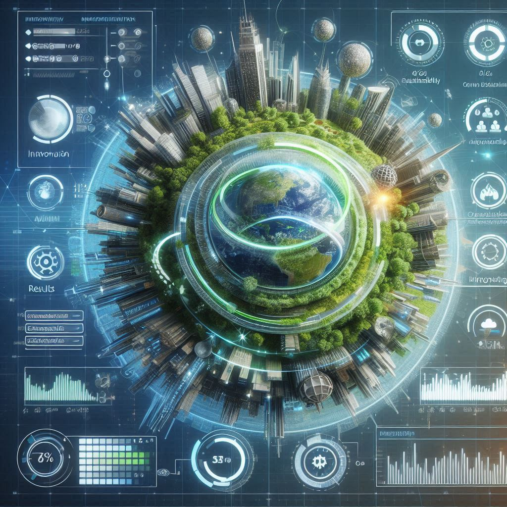
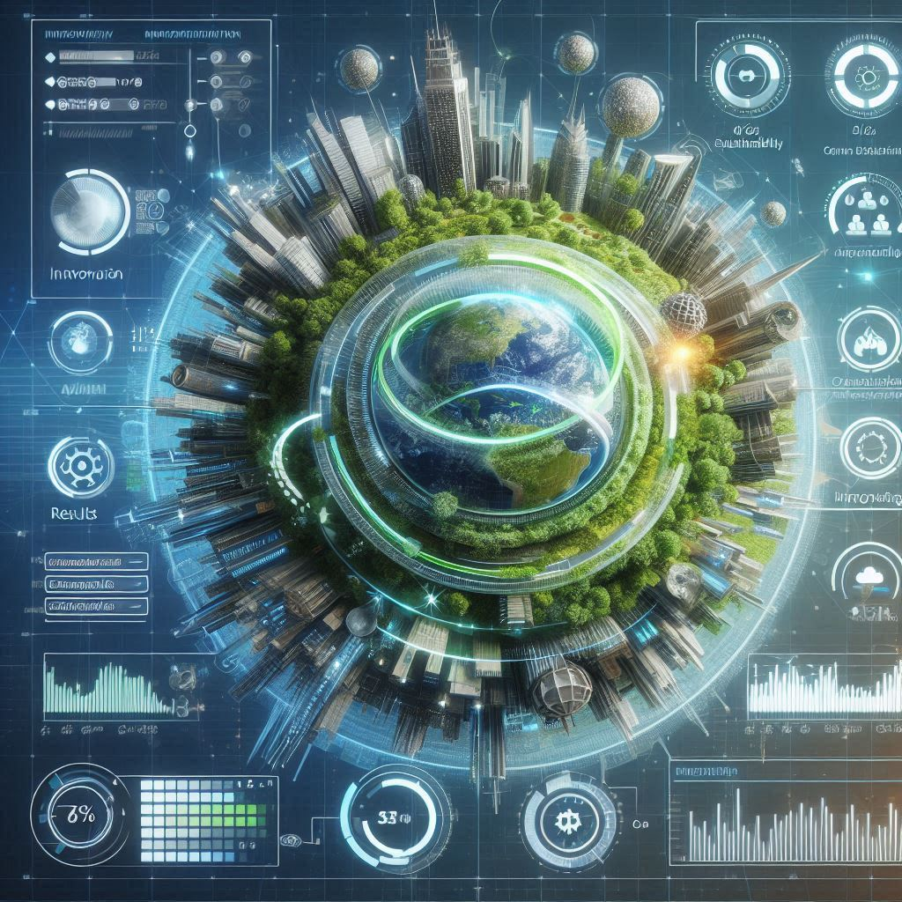
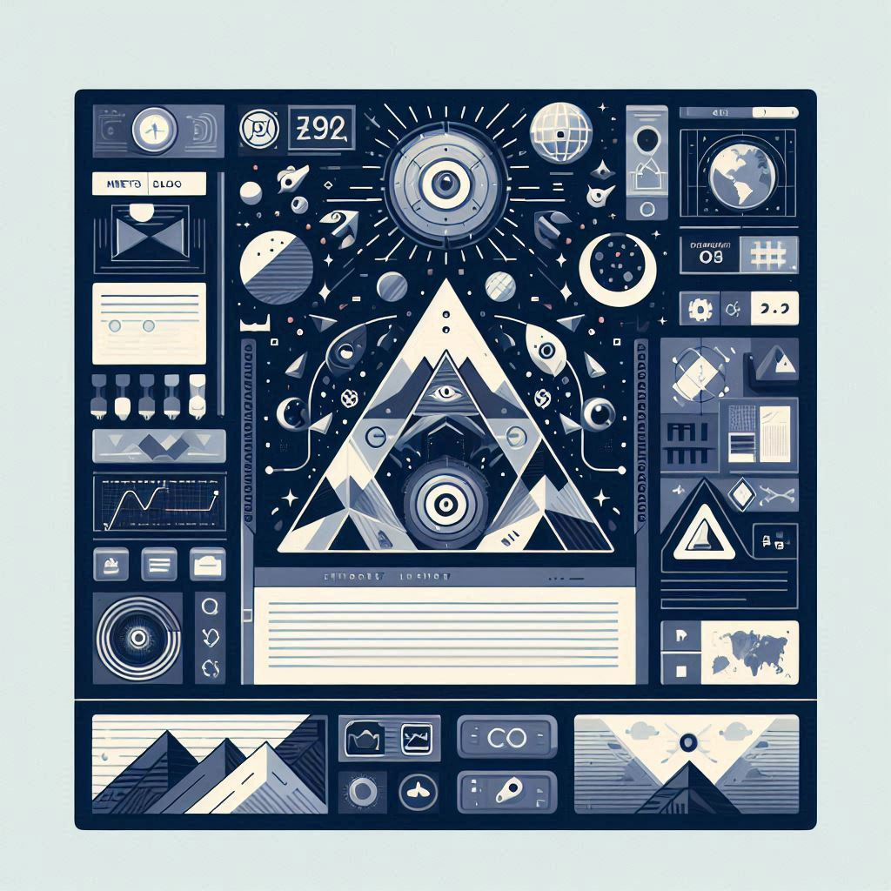
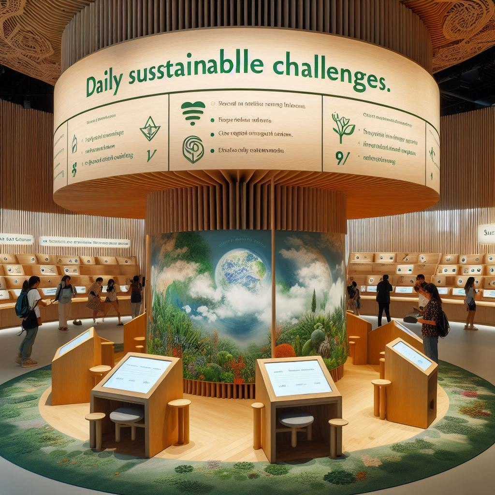

Desafio da sustentabilidade
Desenvolver uma funcionalidade que capte a atenção dos usuários, por meio de uma proposta interativa que integre a sustentabilidade e a inovação, apresentando resultados e feedback dinâmico.
Desenvolver uma funcionalidade que capte a atenção dos usuários, por meio de uma proposta interativa que integre a sustentabilidade e a inovação, apresentando resultados e feedback dinâmico.
Criar um módulo de notícias ou blog, utilizando as técnicas do CSS Grid e Flexbox para exibir os conteúdos de forma responsiva e harmoniosa, sempre reforçando os valores e as iniciativas da Lumina.
Implementar uma área de interação com o visitante, onde sejam apresentadas enquetes ou desafios sustentáveis diários, incentivando a participação ativa e a troca de ideias para a promoção do desenvolvimento sustentável.
